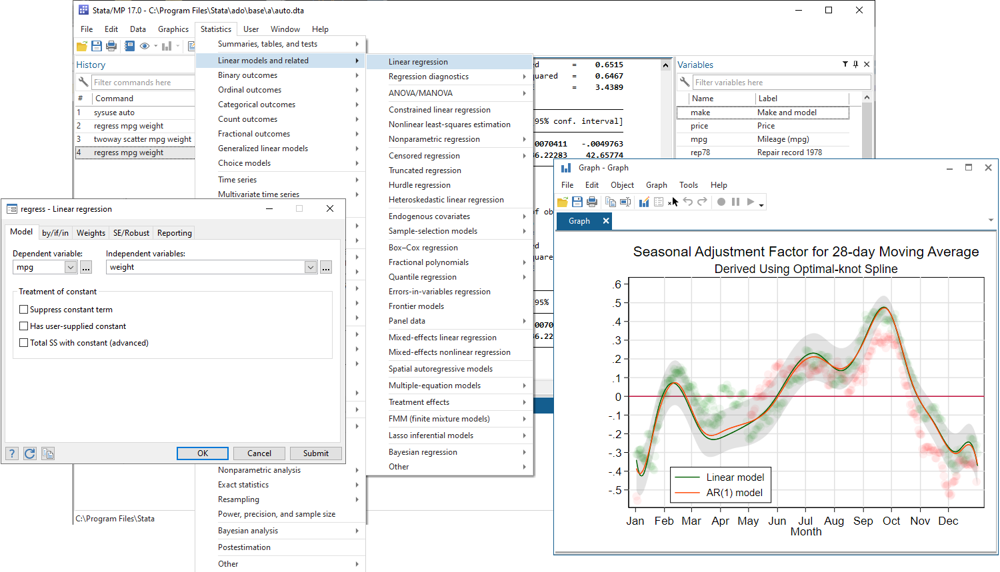

Data Processing in Stata
This section discusses more advanced techniques to organize and generate outcomes in Stata.

Sorting data
Not only could it be useful, but crucial, to sort your observations in a particular way when cleaning or creating outcomes.
You can use the sort command in Stata to achieve this. Of course you can order your observation based on ordering one variable, but you can go further and sort your data on multiple variables. For example if you have a long dataset that contains two variables person id and survey round and for each person it has three survey rounds, then if you sort id round you will sort the data by person and within each person you will sort by the survey rounds.
sortsorts observations in ascending order (i.e. lowest to highest)- Missing values in stata are equivalent to infinity and thus will be sorted to the bottom of your sort if they exist
*Example of points 1 and 2 above
sysuse bplong, clear
sort when patient
sort patient when
preserve
replace when = . if _n == 25
sort when patient //where did the missing value get sorted to?
restore- You can flip the order you sort by using
gsortand using a negative sign in front of the variable name (i.e. sort largest to smallest)
sysuse bplong, clear
*Use sort to see how it normally sorts males first (smallest to largest)
sort sex patient
/*
gsort by -sex to see how to sort largest to smallest
(Notice the patient order does not change within gender)
*/
gsort -sex patient- If the observations of the variables you sort on are not unique, Stata will randomize their order in a new randomization every time you sort (i.e. you will not get a consistent order if you re-run your code, even in a script)
sysuse bplong, clear
/*
Notice that gender-patient does not uniquely identify
our observations
*/
sort sex patient
/*
Flag the row numbers where Stata sorted the "before"
observations for each person
*/
gen flag_before1 = _n if when == 1
*Do the exact same sort as above
sort sex patient
/*
Again flag the row numbers where Stata sorted the "before"
observations for each person this time
*/
gen flag_before2 = _n if when == 1
/*
Notice that the two flag_before variables are not always equal i.e.
the "before" observation ended up in a different place even though
we did the same sort twice
*/- You have two options to make sure your sorts are consistent
- Use the option
stableto make sure Stata uses the same randomization every time- You cannot use this option with `gsort’
- The preferred method is to specify a combination of variables that uniquely identifies your observations. This removes the randomization and makes your sort outcome be exactly what you specify and expect
- Use the option
sysuse bplong, clear
/*
Notice that gender-patient does not uniquely identify
our observations
*/
sort sex patient when
/*
Flag the row numbers where Stata sorted the "before"
observations for each person
*/
gen flag_before1 = _n if when == 1
*Do the exact same sort as above
sort sex patient when
/*
Again flag the row numbers where Stata sorted the "before"
observations for each person this time
*/
gen flag_before2 = _n if when == 1
*Now the flags are always equalThe by function
You can use the by function to create variables within groups, but in order to use by you must sort before hand. Thus, we recommend to use bysort instead.
bysort, gen, and egen
bysort combined with gen/egen is probably one of the most useful command combinations when cleaning and creating outcomes.
- Notice that your data set will be sorted by all the variables (including those in parenthesis) you specify
- But you will create new variables by only what variables you specify outside the parenthesis
- Pay attention to whether the function you are using needs to specify
genoregen- Notice that
sumworks for both gen and egen (even though it is not in theegendocumentation and works differently- egen + sum = creates a total for all values specified in the by
- gen + sum = creates a cumulative sum over the observations specified
- Notice that
See help egen to read about all of the egen functions
Further: - You can ssc install egen more that has even more functions you can use. - You can ssc install ereplace to be able to use the egen functions but as a replace, so you don’t have to create multiples variables.
Preserving/restoring data
You can use collapse when you want to create summary statistics of your data, or some of your variables. Note that collapse works by replacing your data with the summary statistics of each variable that you request. If you are familiar with egen, you can think of collapse as equivalent to egen, except than rather making a new variable it replaces your variables. Additionally, any variables you don’t specify will be dropped. This means this command erases your data. Because of this destructive nature there are several best practices to use around collapse.
It is common you would like to maintain your dataset while outputting some summary statistics. You can quickly do this by preserving, collapsing, and then restoring your data.
sysuse census, clear
preserve
collapse (mean) pop (median) medage, by(region)
save "example.dta", replace
restoreIn the comments of your do-file, you should write why you chose the collapse statistic you chose for each variable. This is especially important when multiple statistics would result in the same thing and you chose one arbitrarily. For example, if you have a constant variable for what you are collapsing on, so you pick mean instead of mode or first non missing, this is important for someone to know later. If they are adding in more data and run into errors they need to know why you picked what you did and it will help them understand the data structure and errors.
Asserting beforehand
It is important you code asserts before you collapse to check that you’re variables are what you are expecting. For example, if you think you have a constant var among the variables you are collapsing on - you should check prior to collapsing. If you are wrong, you could not know based on the stat you choose, and it is hard to check after the collapse since the data is gone.
An alternative to using collapse is using egen and the dropping duplicates instead. This way once you make your statistics you can do some assert functions to check that everything was created the way you think they were created.